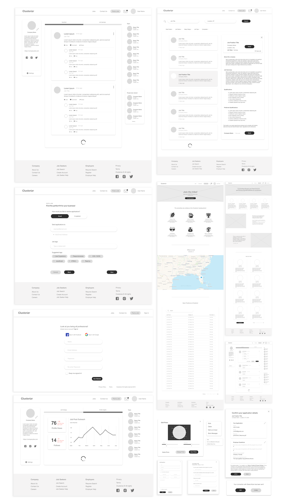
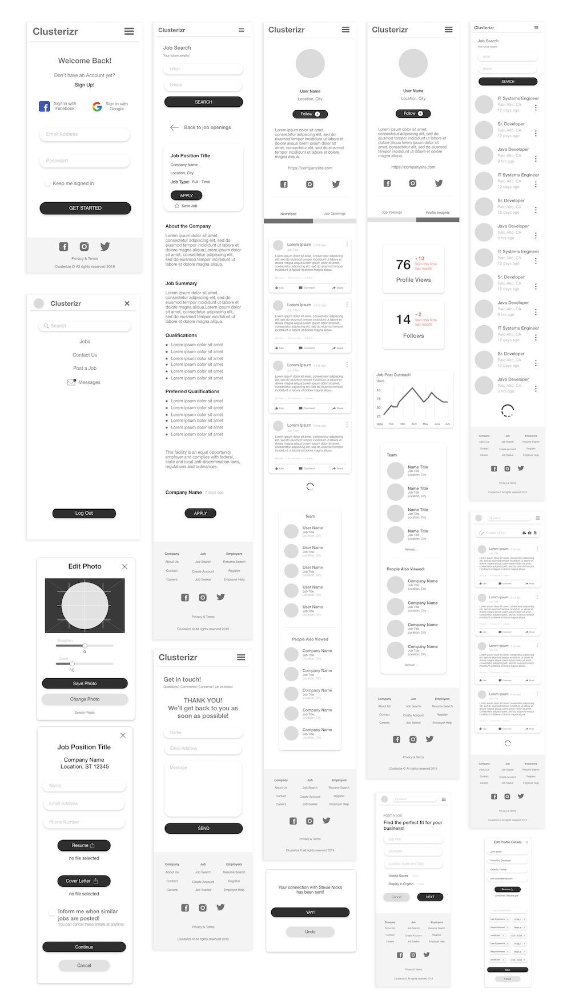
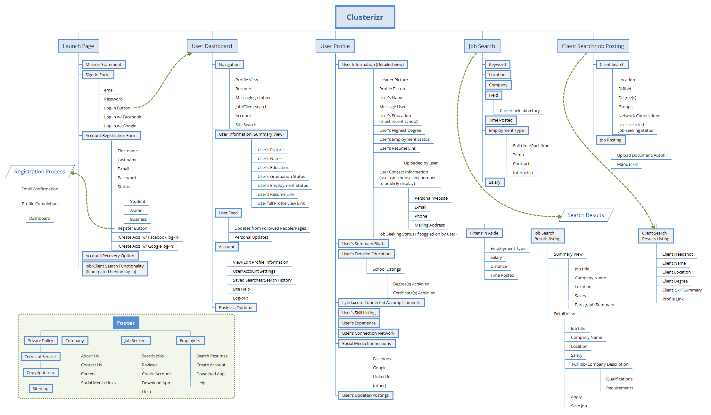

Design
The University of Central Florida has a great style guide that we were able to apply. UCF's palette codes and fonts were beneficial to the outcome of Clusterizr's design. Whether the users consciously realize it, they know they are home.
Web Wireframes
Mobile Wireframes
User Flow
The prototyped user persona is that of John Smith, a web programmer and UCF senior with the protfolio and experience to suit a great team. He lacks network connections in his area since he has been mainly focused on schooling. Clusterizr allows him to showcase his work, developer his profile, connect with companies and employers as well as stay updated on local inductry news. His goal of building professional cofidence and network has been met.
Sitemap
Many boards were to be wireframes, designed and prototyped to accomplish Clusterizr's wide spectrum of capabilities such as user/employer login, newfeeds, user/employer profiles, message centers, job/resume searches and results, application forms, post a job forms, help centers for both employers and users as well as an employer back office to edit job posting, see post statuses and applicants as well as profile insight.